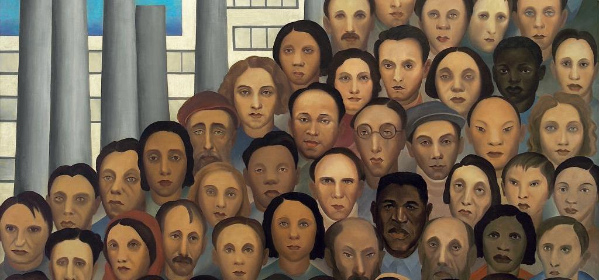
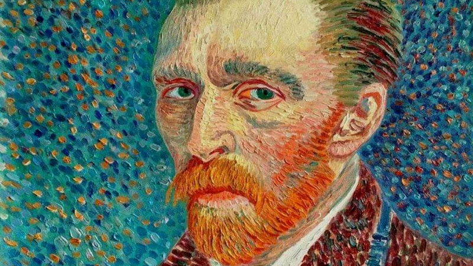

Educação como fator decisivo para o desenvolvimento
O Brasil possui 11,3 Milhões de analfabetos (IBGE - PNAD Contínua 2018 - Educação), e são 750 milhões de analfabetos no mundo todo, ou seja, representam 10% da população global. O Brasil tem uma meta em aberto, de erradicar o analfabetismo até 2024, mas diminui em ritmo lento e desanimador, sendo que a meta para 2015 era de abaixar para 6,5% o índice de analfabetismo, estando em 2019 com 6,8%. Mas porque esse número é tão grande? A resposta é um conjunto de fatores.
Mas porque esse número é tão grande?
Bom, a resposta pra essa pergunta é um pouco extensa, sendo um conjunto de fatores sociais, estruturais e pessoais.
Fatores Sociais

Tarsila do Amaral - Operários, 1933
Como fatores sociais, englobamos fatores da cultura de um país, seja o trabalho infantil, a falta do incentivo ao estudo, a privação feminina, a pobreza e etc. Muitas crianças de famílias pobres acabam largando os estudos para ajudar a família na obtenção de alguma renda, o que entra em três fatores citados acima: a falta de incentivo ao estudo por um bem maior, o trabalho na infância e a pobreza. Em determinados países, há uma cultura extremamente privativa para o sexo feminino, onde em certos casos elas não possuem o direito de ir para a escola, ou aprender a ler e a escrever, pois isso não é a função de uma mulher em sua cultura, que geralmente é designada para ficar em casa, cuidando dos filhos e fazendo serviços domésticos. Um país com um bom desenvolvimento gera naturalmente uma educação de qualidade, pois há um incentivo intrínseco a uma sociedade melhor e de um crescimento exponencial (Japão, por exemplo).
Fatores Estruturais
Como fatores estruturais, temos a falta de capacitação do lecionador, a falta de uma educação heterogênea e inclusiva, a falta de material educativo assertivo e a carência de uma infraestrutura escolar correta e que seja acessível para todos os alunos. Gostaria de citar uma metáfora que descreve muito bem a educação: "O caleidoscópio precisa de todos os pedaços que o compõem. Quando se retira pedaços dele, o desenho se torna menos complexo, menos rico. As crianças se desenvolvem, aprendem e evoluem melhor em um ambiente rico e variado" (Forest et Lusthaus, 1987 : 6). Ou seja, quando você tenta tratar todos os alunos como iguais, deixando de lado suas particularidades, a qualidade do ensino cai drasticamente, vão ter alunos que vão conseguir se desenvolver, mas em uma fração muito menor do que os demais, o que já por si só já é um problema na educação. Em uma sala de aula você pode ter alunos, dos mais diversos tipos, você pode ter crianças com TDAH ou TDA, Autismo, Dislexia, deficiência física, motora, visual ou mental, os superdotados e muitos outros tipos, como já se diz a palavra "indivíduo". Por isso muitas crianças acabam evadindo das escolas, por não conseguirem se desenvolver ou por estar "abaixo" dos demais colegas de classe. Por isso é importante professores capacitados para lidar com todas as individualidades, uma escola adaptada para todos, um modelo de ensino que não seja homogêneo, e materiais escolares bem elaborados e funcionais para todos os alunos.
Fatores Pessoais

Van Gogh - Autorretrato, 1887
Como fatores pessoais, há uma conexão com os problemas sociais. São problemas causadores da evasão escolar a gravidez precoce, uso de drogas, abuso físico e emocional, Bullying, depressão e etc. Esses problemas citados acima acabam tirando a disposição do aluno de ir para a escola, ou até mesmo incapacitando, e para que o aluno volte a estudar, é necessário uma conversa com os pais, psicólogo, assistente social ou conselheiro escolar. A melhor escolha nesses casos é fazer sessões com o psicólogo, pois esse profissional auxiliará o aluno a trabalhar desde a questão familiar, pessoal e escolar, tornando o aluno apto a retornar as atividades escolares.
E qual a proposta da ONU?
4.1 Até 2030, garantir que todas as meninas e meninos completem o ensino primário e secundário livre, equitativo e de qualidade, que conduza a resultados de aprendizagem relevantes e eficazes
4.2 Até 2030, garantir que todos as meninas e meninos tenham acesso a um desenvolvimento de qualidade na primeira infância, cuidados e educação pré-escolar, de modo que eles estejam prontos para o ensino primário
4.3 Até 2030, assegurar a igualdade de acesso para todos os homens e mulheres à educação técnica, profissional e superior de qualidade, a preços acessíveis, incluindo universidade
4.4 Até 2030, aumentar substancialmente o número de jovens e adultos que tenham habilidades relevantes, inclusive competências técnicas e profissionais, para emprego, trabalho decente e empreendedorismo
4.5 Até 2030, eliminar as disparidades de gênero na educação e garantir a igualdade de acesso a todos os níveis de educação e formação profissional para os mais vulneráveis, incluindo as pessoas com deficiência, povos indígenas e as crianças em situação de vulnerabilidade
4.6 Até 2030, garantir que todos os jovens e uma substancial proporção dos adultos, homens e mulheres estejam alfabetizados e tenham adquirido o conhecimento básico de matemática
4.7 Até 2030, garantir que todos os alunos adquiram conhecimentos e habilidades necessárias para promover o desenvolvimento sustentável, inclusive, entre outros, por meio da educação para o desenvolvimento sustentável e estilos de vida sustentáveis, direitos humanos, igualdade de gênero, promoção de uma cultura de paz e não violência, cidadania global e valorização da diversidade cultural e da contribuição da cultura para o desenvolvimento sustentável
4.a Construir e melhorar instalações físicas para educação, apropriadas para crianças e sensíveis às deficiências e ao gênero, e que proporcionem ambientes de aprendizagem seguros e não violentos, inclusivos e eficazes para todos
4.b Até 2020, substancialmente ampliar globalmente o número de bolsas de estudo para os países em desenvolvimento, em particular os países menos desenvolvidos, pequenos Estados insulares em desenvolvimento e os países africanos, para o ensino superior, incluindo programas de formação profissional, de tecnologia da informação e da comunicação, técnicos, de engenharia e programas científicos em países desenvolvidos e outros países em desenvolvimento
4.c Até 2030, substancialmente aumentar o contingente de professores qualificados, inclusive por meio da cooperação internacional para a formação de professores, nos países em desenvolvimento, especialmente os países menos desenvolvidos e pequenos Estados insulares em desenvolvimento
E como atingir esse objetivo?
Alfabetização do adulto
Os adultos representam a maior parcela dos analfabetos no mundo, e são mais difíceis de serem alfabetizados, por fatores como a disponibilidade de tempo, vergonha ou por não terem a absorção de conteúdo que uma criança tem. Para conseguir bons resultados, seria preciso um incentivo, ou seja, ter uma didática explicativa, mas que não seja complexa, e que prenda a atenção do aluno, é muito importânte que o aluno veja resultado em seus estudos, pois irá encorajar ele a continuar se esforçando, além de ter um vínculo com um programa de geração de emprego, fazendo com que, ao mesmo tempo acabe com dois problemas mundiais, o sub-emprego e o analfabetismo. No Brasil temos o EJA (Educação de Jovens e Adultos), que é uma modalidade de ensino para jovens e adultos que não tinham acesso à escola na idade apropriada, permitindo que o aluno retome ou comece seus estudos, podendo se graduar em menos tempo do que seria em uma escola comum. Além também de ter programas de inclusão em universidades, sejam públicas ou privadas, tornando o processo seletivo para o ingresso universitário muito mais justo.
Alfabetização infântil
As crianças possuem uma curva de aprendizado exponencial muito progressiva, o que torna esse processo de alfabetização muito fluído. Existem dois fatores que são fundamentais nesse processo, o modelo de ensino e os materias ao qual a criança tem disponíveis. O modelo de ensino que muitas escolas usam, são carentes em certos aspectos, pois levam em conta o todo, e não o indivíduo, fazendo com que um se desenvolva muito, e outro se desenvolva pouco, causando uma desmotivação da criança afetada. O ensino deve ser para todos na sala de aula, e deve ser um modelo flexível e que incentive e cative a criança a continuar estudando. Os materias didáticos são de extrema importância, pois, em certos casos, eles se tornam a principal fonte de estudo do aluno, e são complementares e mais aprofundados que o conteúdo apresentado em sala. A geolocalização é um problema em certos casos, pois, a escola acaba ficando distante da casa do aluno, e nesse caso a construção de mais escola seria a melhor opção, mas o ensino a distância ou o ensino com um professor itinerante já seria de grande ajuda para a criança.
Incentivo externo
A internet veio para tornar nossa vida mais fácil e tornar muitas coisas acessíveis a todos, e usar ela para a alfabetização seria de grande ajuda. E investir em materiais digitais é algo muito mais rentável do que materiais físicos, que possuem um custo de envio, produção e impostos. O material digital é barato, sustentável e acessível a todos, seja na forma de vídeo, áudio, imagem ou texto, e com a criação de um programa educacional seja pelo governo, ONG ou uma empresa privada, atingiria um número enorme de pessoas. E dando além da alfabetização, uma especialização profissional ou um aprendizado complementar, fazendo com que incentive o conhecimento. Um grande exemplo de incentivo educacional digital gratuito, é a Junior Achievement que estimulam os jovens a aprender cada vez mais, preparando para o mercado de trabalho usando o método de aprender fazendo, o que faz você sempre ver resultado de seu aprendizado. Outro exemplo é o Instituto Ayrton Senna, que ajuda muito a educação brasileira, e vem produzindo conhecimento e experiências educacionais inovadoras capazes de inspirar práticas eficientes, capacitar educadores e propor políticas públicas com foco na educação integral.
Vídeos informativos
Sobre o autor
Eu me chamo Raphael Rodrigues Oliveira, sou programador desde o início da pandemia, onde vi o tempo vago como uma grande oportunidade de aprender coisas novas, e como sempre tive interesse na área de tecnologia, resolvi entrar nesse mundo, e acabei me apaixonando. Possuo conhecimento nas linguagens de Back-end Python e C, e conhecimentos Front-end HTML e CSS. Em breve irei cursar Análise e Desenvolvimento de Sistemas, para me profissionalizar na área de programação, e assim crescer como desenvolvedor.